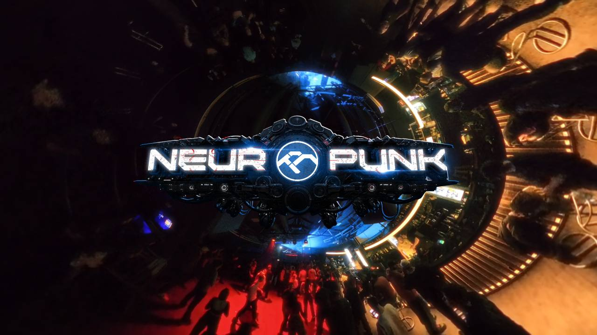
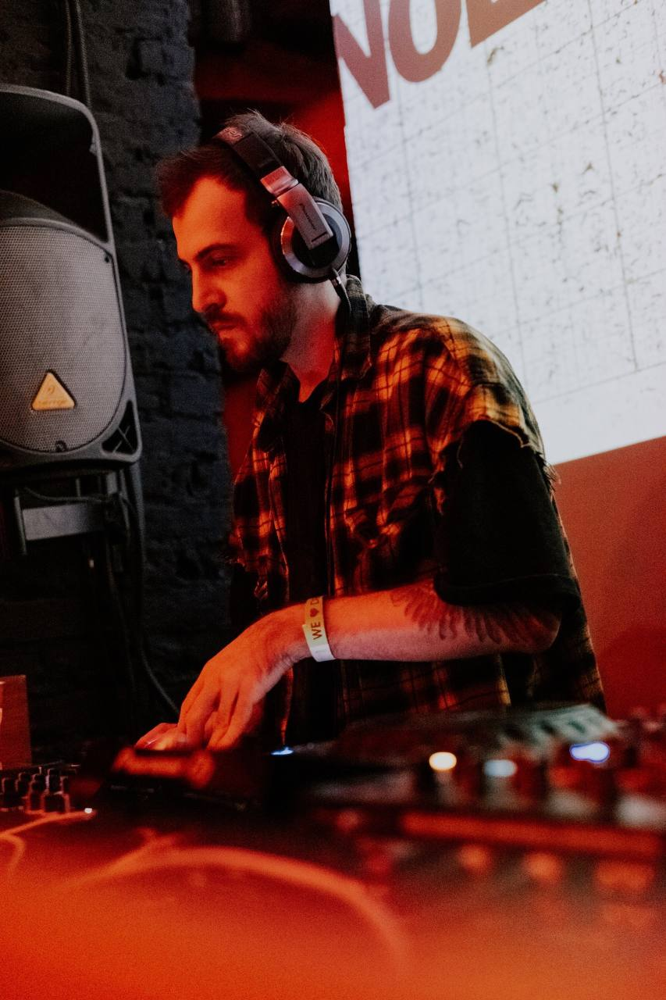
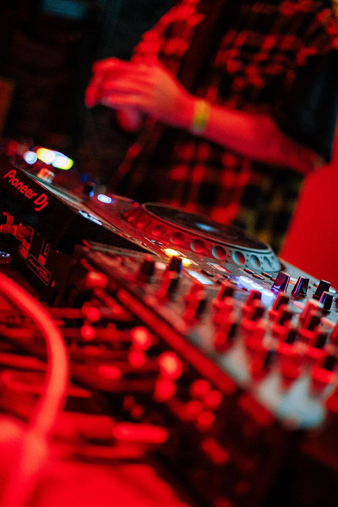
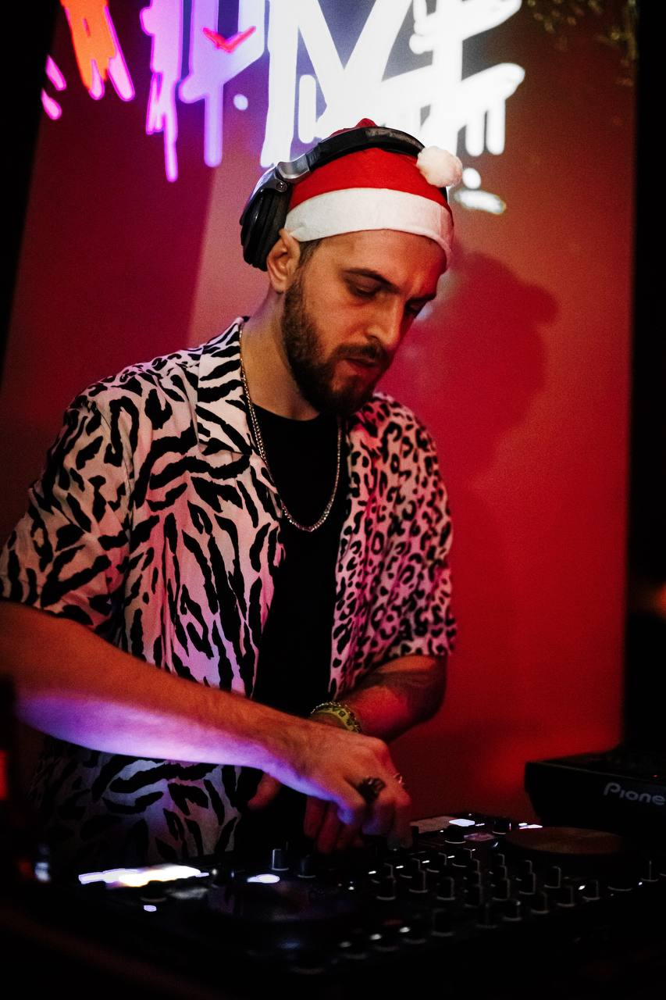
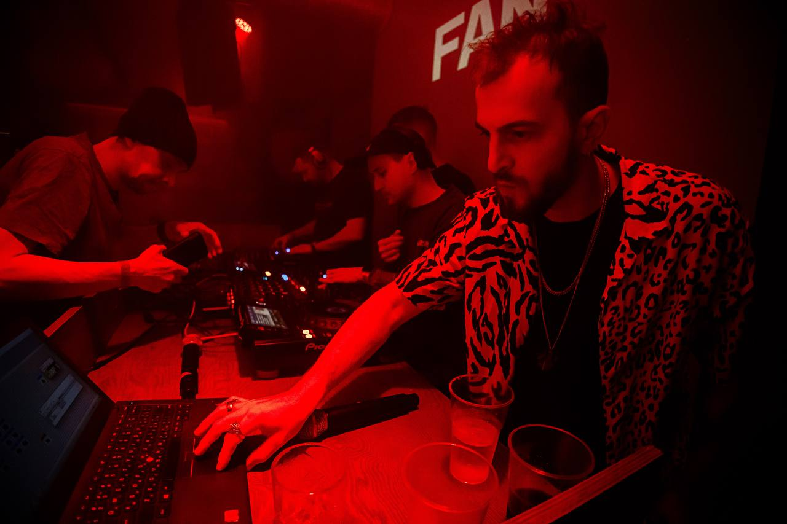
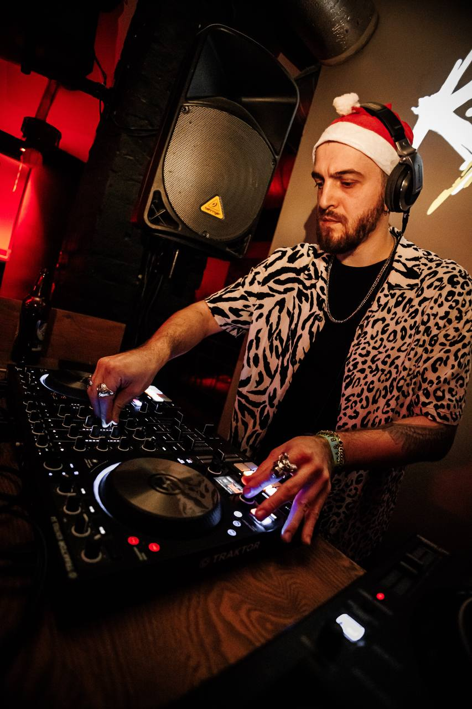
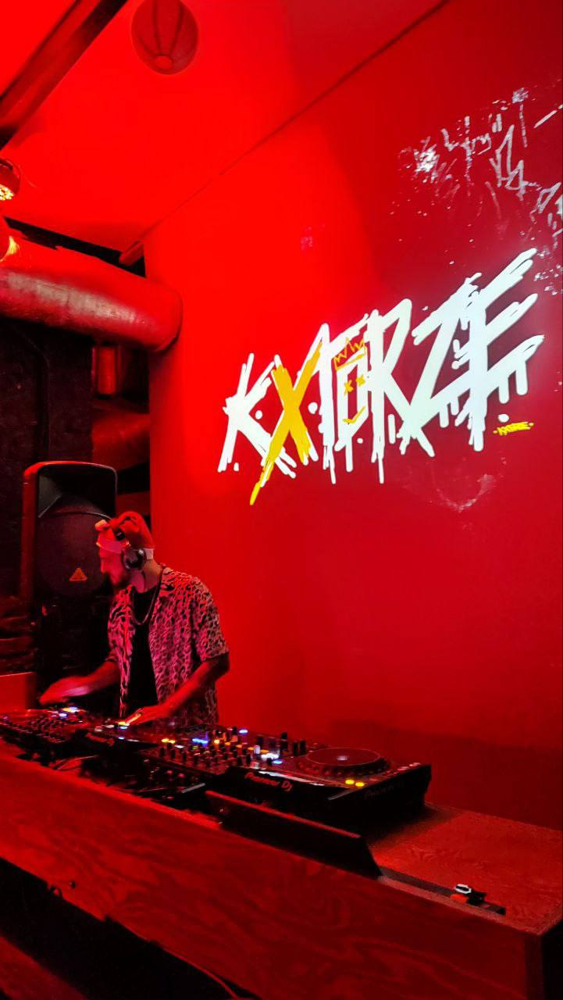

Drum & Bass Artist / DJ / Producer
kxtroze
Drum and Bass production, DJ sets, and heavy bass music shaped with UK Bass influence, Russian roots, and a personal sonic vision.
Artist
original music
Producer
beats & records
2005
active since
About
Bass with vision.
Kxtorze is a Drum and Bass artist and DJ from Russia. Active since 2005, he was previously part of Gustov Fam and Beskar & Raidu.
Now focused on DnB production and DJing, he is a resident at DNB INSIDE events and the creator of "Cycleroll", crafting heavy, honest bass music with his own direction.
Festival
NEUROPUNK Samara
Главный отечественный DRUM&BASS-рейв NEUROPUNK в Самаре.
Main DnB rave
NEUROPUNK made history.
On March 21, Signal sounded louder than ever. Thank you to everyone who was there with us.



Live Photos
DNB INSIDE IN XBAT
Club booth, red light, raw DnB pressure.









Releases
Latest releases


Services
Production for artists, labels, and visual stories.
Production
Full track production from idea to final arrangement.
Mixing
Modern, detailed mixes with depth, width, and impact.
Mastering
Polished masters ready for streaming and release delivery.
Songwriting
Hooks, toplines, lyric direction, and melodic development.
Sound Design
Custom synth palettes, sonic logos, textures, and atmospheres.
Video / Media
Visual world
Clips, sessions, and cinematic live visuals.
Festival Video
NEUROPUNK Samara
Official Video
Afterglow
Live Session
Studio Room 02
Contact